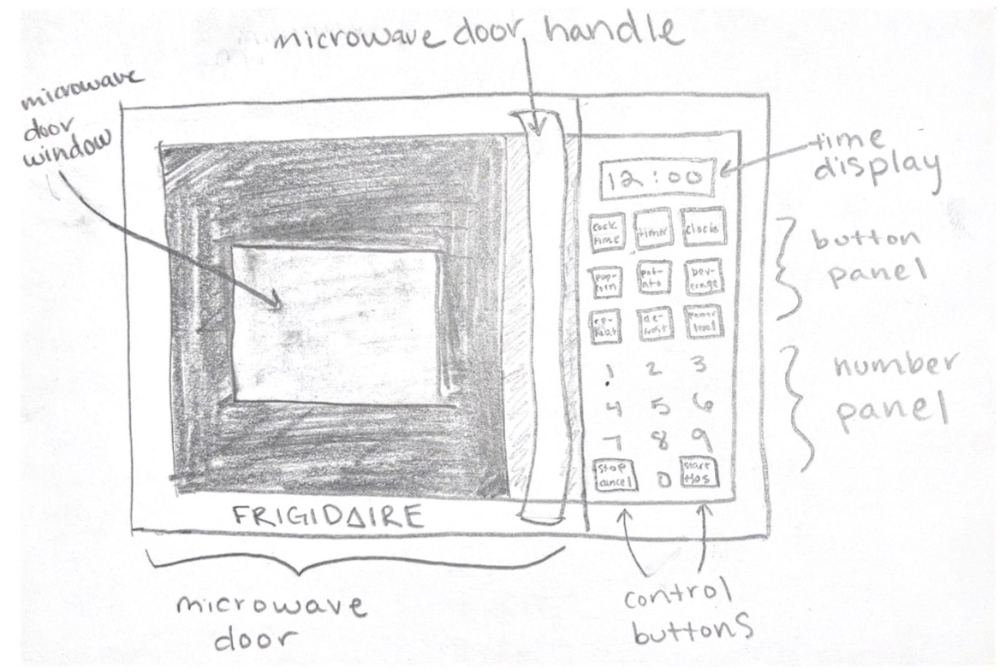
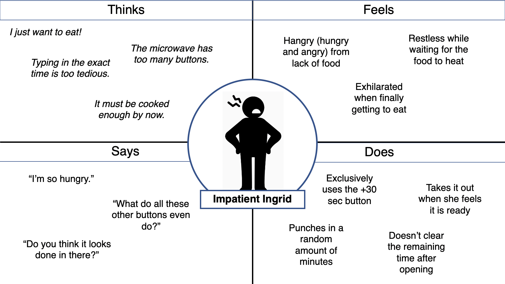
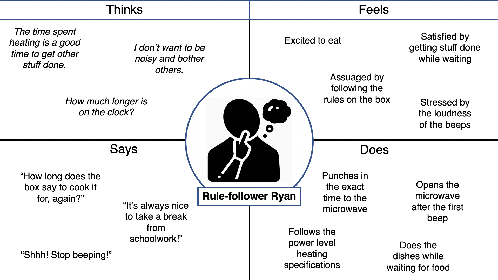
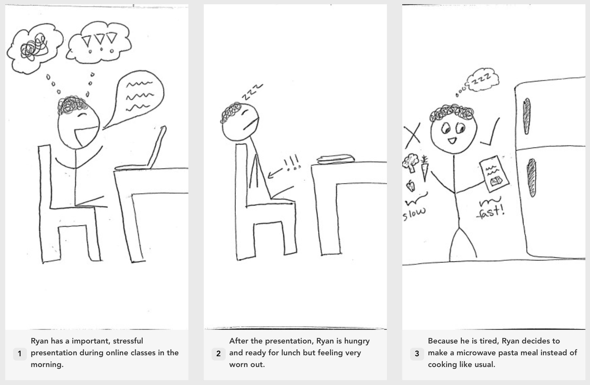
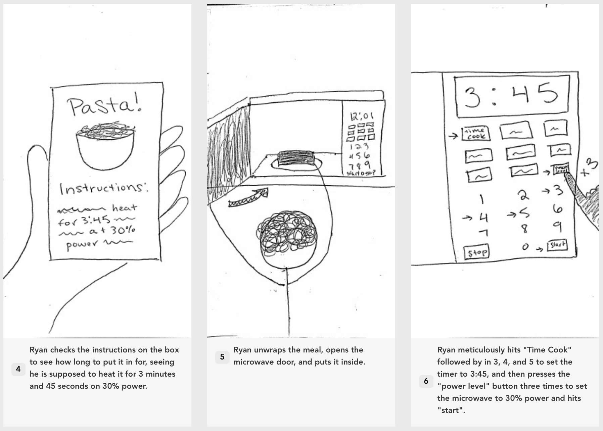
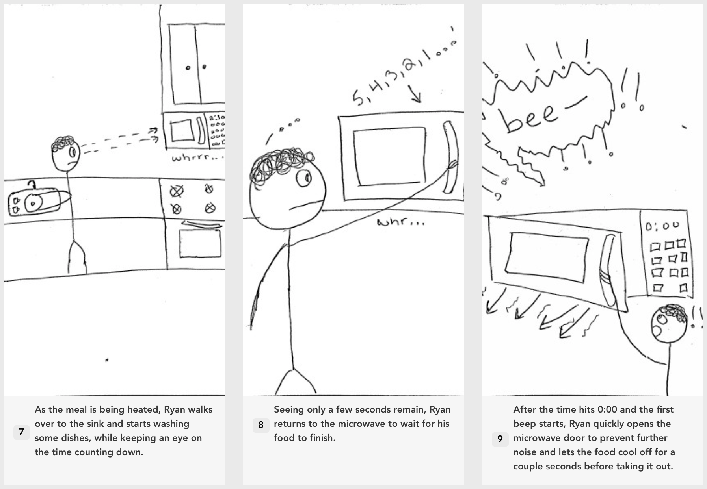
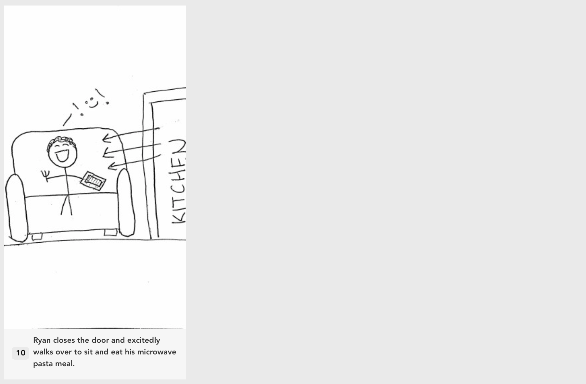

One might assume there is only right one way to use a microwave. They are a common, relatively simple household item, and something many of us have been using since childhood. However, after recently moving in with seven other people with wildly different personalities and background, I have noticed that there are several different unexpected ways one might interact with a microwave to achieve the same results - quickly heated up food.
Research
In order to more concretely define what I had been noticing, I observed and interviewed three of my roommates using the microwave in our second-floor kitchen.

The second-floor microwave is used to heat up and cook food quickly and easily (as compared to the oven or stovetop) with electromagnetic radiation. The power and duration of the radiation can be selected using buttons on the front of the interface, where you can input an exact time and power, use preset settings (e.g. popcorn, defrost, potato), or just add 30 seconds incrementally at full heat.
Observations
User C:
- Chose a packaged microwave meal item to heat with exact heating specifications (1 min 45 sec)
- Hit the +30 seconds button four times (total 2 min)
- Cringed at the sound of the buttons beeping
- Completed other kitchen tasks, glancing over at the time occasionally
- Around 10 seconds left, opened the microwave door and took out food
- Cleared the remaining time and went to go eat meal
User G:
- Chose to heat up leftover pasta (no exact time/heat specifications)
- Quickly tapped the +30 seconds button a few times to a total of 2 minutes
- Stood by and watched the microwave run for ~1 min 10 sec before opening the door and taking it out
- Did not hit cancel to clear the remaining time and went to go eat meal
User Z:
- Chose a packaged microwave meal item to heat with exact heating specifications (2 minutes, let cool down before eating)
- Typed in the time of two minutes and hit start
- Washed dishes while waiting
- After hearing the beeping, let the item sit a couple minutes before taking it out and eating
Interviews
The questions asked in the interview are as follows:
- How often in a week do you use this microwave?
- What do you use the microwave for?
- Of all the buttons, which have you ever used?
- On a scale from 1 to 10 (1 being frictionless and 10 being very irritating), how would you rate the efficiency of the buttons.
- What features of the microwave do you find most problematic and why, if any?
- How did you feel when you were done using the microwave?
- Do you usually let the time run out to completion, or stop the food early?
A summary of each user's responses are listed below.
User C:
User C reported using the microwave about once a week, usually for reheating
leftovers, but occasionally for making something microwavable or as a part of the cooking process.
They usually use the +30 seconds button, but occasionally typing in the actual time with
time cook and the numbers, depending on their mood.
They had never used any of the preset buttons (popcorn, potato, etc.) or the power level button.
They rate the efficiency of the buttons a 6 out of 10. The most problematic features were the
slight delay after pressing a button and how loud this particular microwave was. After their food
was ready, they felt excited to eat it.
They will often stop the food early, either if they added too much time they will stop it when it
is ready, or if the exact time was inputted they will stop it at one second left
(both just for fun and to prevent the beeping).
User G:
User G reported using the microwave about five times a week, for reheating
leftovers and making a microwavable prepackaged meal.
They reported always using the +30 seconds button to set the time, never really
using any of the other buttons.
They rate the efficiency of the buttons a 8 out of 10. This user did not really
see any issues with any of the features, just calling many "unnecessary".
After their food was ready, they felt impatient to eat it.
They will often stop their food from cooking early, as they said usually they do
not input anything close to the right time and will just stop it when around the correct
amount has run off the clock.
User Z:
User Z reported using the microwave about once a week, either for reheating food, cooking, or baking. They will
buy a prepacked microwave meal "once in a blue moon".
They reported always just using the time cook button and setting the exact time. They
also used the power level button when called for in directions, and one time used the "popcorn" button for popcorn.
They rate the efficiency of the buttons a 2 out of 10. This user found the loudness of the microwave to be problematic.
After their food was ready, they did not feel any distinct emotion, just ready to get a move on and finish their meal so
they could get back to work.
This user almost always lets the clock run out fully, unless they guessed on the time and it seems too long,
and often takes a few moments to actually come retrieve the food.
Personas
From my research above, I extrapolated two personas represented by empathy maps to demonstrate different archetypes of microwave users.

Impatient Ingrid is a working professional in a stressful, fast-paced job. Today, she has her usual quick microwave meal at lunch. Ingrid faces the problem of how long the microwave takes to cook her food and how slow and tedious it is to use the microwave's buttons. Ingrid represents the population of people that just focused on the end product and wants to get their food heated with as little mental and physical effort as possible.

Rule-follower Ryan is a college student taking online classes, who eats lunch every day at noon. He had an important presentation this morning and is too tired to cook today, deciding to make a microwave meal instead. Ryan faces the problem of how long it takes to follow the exact directions on the box, wanting the food to be cooked perfectly, and dislikes how loud the microwave beeps. This persona represents the segment of people who just like to use the microwave as specified and intended and who tend to like to conform to rules and not cause problems for themselves or others.
Storyboarding
Using the ideas from the persona above, we can imagine a lunchtime for Rule-follower Ryan in the form of a storyboard.



